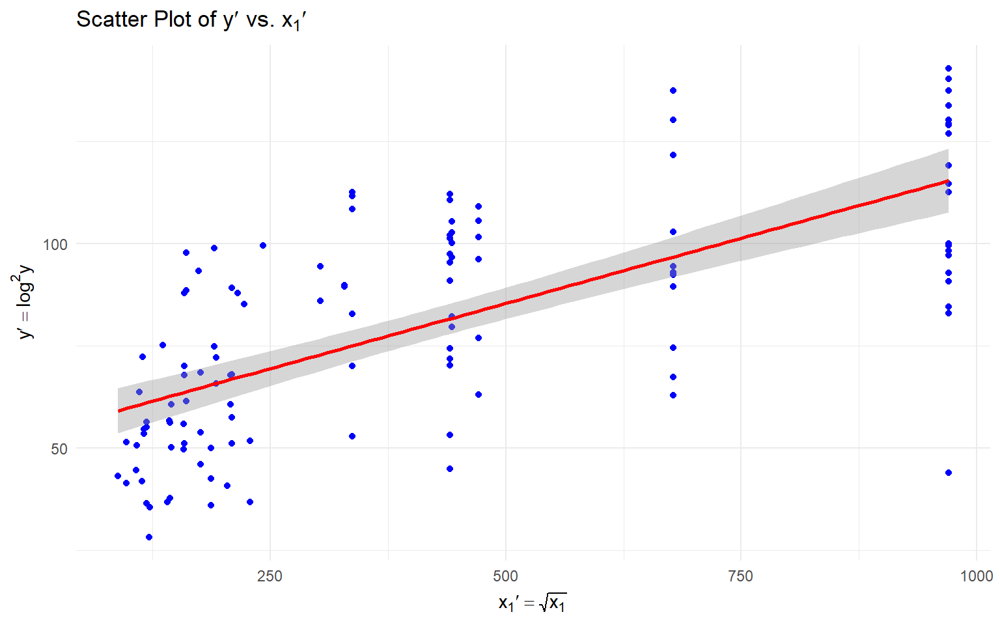
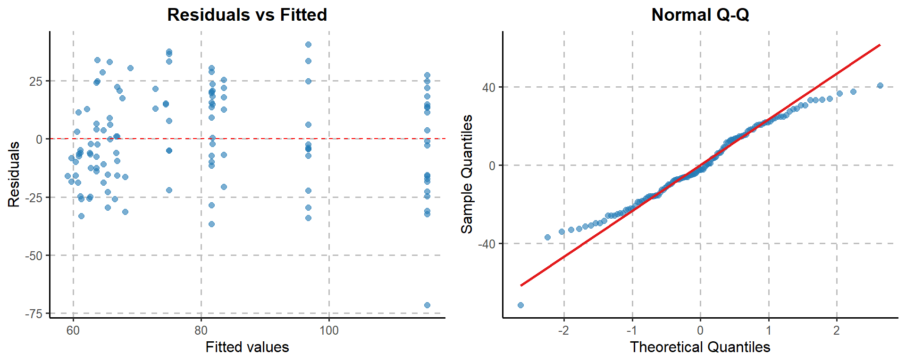

DataAnalysis
Setup and Load Data
library(ggplot2)
library(GGally)
library(tidyr)
library(reshape2)
library(latex2exp)
library(gridExtra)
library(ggside)
library(RColorBrewer)
draw <- function(drawing_function, file_path, width = 8, height = 8) {
# Check if the directory exists
dir_path <- dirname(file_path)
if (!dir.exists(dir_path)) {
stop("Directory does not exist: ", dir_path)
}
# Try to create the PDF
tryCatch(
{
pdf(file_path, width = width, height = height)
drawing_function()
dev.off()
},
error = function(e) {
message("Error creating PDF: ", e$message)
}
)
# Display the plot
drawing_function()
}file <- "../assets/aadt.txt"
data_raw <- read.table(file, col.names = columns)
data <- data_raw[, c("Y", "X1", "X2", "X3", "X4")]
head(data)## Y X1 X2 X3 X4
## 1 1616 13404 2 52 2
## 2 1329 52314 2 60 2
## 3 3933 30982 2 57 2
## 4 3786 25207 2 64 2
## 5 465 20594 2 40 2
## 6 794 11507 2 44 2Overview of the data
overview_image_path <- file.path(image_folder, "overview")
dir.create(overview_image_path, showWarnings = FALSE)# Create separate plots for each variable
plot_Y <- ggplot(data, aes(x = Y)) +
geom_histogram(aes(y = after_stat(density)), fill = "lightblue", color = "black", bins = 30, alpha = 0.6) +
geom_density(color = "red", linewidth = 1) +
labs(title = "Distribution of Y") +
theme_minimal()
plot_X1 <- ggplot(data, aes(x = X1)) +
geom_histogram(aes(y = after_stat(density)), fill = "lightblue", color = "black", bins = 30, alpha = 0.6) +
geom_density(color = "red", linewidth = 1) +
labs(title = "Distribution of X1") +
theme_minimal()
plot_X2 <- ggplot(data, aes(x = X2)) +
geom_histogram(aes(y = after_stat(density)), fill = "lightblue", color = "black", bins = 30, alpha = 0.6) +
geom_density(color = "red", linewidth = 1) +
labs(title = "Distribution of X2") +
theme_minimal()
plot_X3 <- ggplot(data, aes(x = X3)) +
geom_histogram(aes(y = after_stat(density)), fill = "lightblue", color = "black", bins = 30, alpha = 0.6) +
geom_density(color = "red", linewidth = 1) +
labs(title = "Distribution of X3") +
theme_minimal()
# Arrange histograms in 2x2 grid
histogram_grid <- arrangeGrob(
plot_Y, plot_X1, plot_X2, plot_X3,
ncol = 2,
nrow = 2
)# Create pie chart for X4
x4_counts <- table(data$X4)
plot_X4 <- ggplot(data.frame(x4_counts), aes(x = "", y = Freq, fill = Var1)) +
geom_bar(stat = "identity", width = 1) +
coord_polar("y", start = 0) +
labs(
title = "Distribution of X4",
fill = "Category"
) +
scale_fill_manual(
values = c("#FF9999", "#66B2FF"),
labels = c("yes", "no")
) +
theme_minimal() +
theme(
plot.title = element_text(hjust = 0.5, size = 14),
legend.position = "bottom",
legend.title = element_text(),
panel.grid = element_blank(),
axis.text = element_blank(),
axis.title = element_blank(),
) +
geom_text(
aes(
label = paste0(round(100 * Freq / sum(Freq), 1), "%")
),
position = position_stack(vjust = 0.5)
)
# Combine histogram grid and pie chart vertically
combined_plot <- grid.arrange(
histogram_grid,
plot_X4,
ncol = 2,
widths = c(3, 1)
)Graphic display of the observed data
pdf(file.path(image_folder, "overview.pdf"), width = 10, height = 10)
ggpairs(data,
upper = list(continuous = wrap("points", color = "blue", alpha = 0.5, size = 2)),
lower = list(continuous = wrap("points", color = "red", alpha = 0.5, size = 2)),
diag = list(continuous = wrap("densityDiag", fill = "lightblue"))
)
dev.off()## png
## 2We let \(y' = \log y\) to fix the skewness of the data.
y_prime <- log(data$Y)^2
y_prime_fig <- ggplot(data.frame(y_prime), aes(x = y_prime)) +
geom_histogram(aes(y = after_stat(density)), fill = "lightblue", color = "black", bins = 30, alpha = 0.6) +
geom_density(color = "red", linewidth = 1) +
labs(title = TeX("Distribution of $y' = \\log^2y$"), x = TeX("$y' = \\log^2y$")) +
theme_minimal()
y_prime_figFinally, we replace the original \(y\) with \(y'\).
x1_prime <- sqrt(data$X1)
x1_prime_fig <- ggplot(data.frame(x1_prime), aes(x = x1_prime)) +
geom_histogram(aes(y = after_stat(density)), fill = "lightblue", color = "black", bins = 30, alpha = 0.6) +
geom_density(color = "red", linewidth = 1) +
labs(title = TeX("Distribution of $x_1' = \\sqrt{x_1}$"), x = TeX("$x_1'=\\sqrt{x_1}$")) +
theme_minimal()
x1_prime_figSingle Variable Analysis
slr_output_folder <- file.path(image_folder, "slr")
dir.create(slr_output_folder, showWarnings = FALSE)X1
X1_output_folder <- file.path(slr_output_folder, "X1")
dir.create(X1_output_folder, showWarnings = FALSE)# scatter plot
scatter_plot_path <- file.path(X1_output_folder, "scatter_plot.pdf")
scatter_plot_X1 <- ggplot(data, aes(x = x1_prime, y = y_prime)) +
geom_point(color = "blue") +
geom_smooth(method = "lm", se = FALSE, color = "red") +
labs(title = TeX("Scatter Plot of $y'$ vs. $x_1'$"), x = TeX("$x_1'=\\sqrt{x_1}$"), y = TeX("$y'=\\log^2 y$")) +
theme_minimal()
ggsave(scatter_plot_path, scatter_plot_X1, width = 8, height = 6)## `geom_smooth()` using formula = 'y ~ x'## `geom_smooth()` using formula = 'y ~ x'
##
## Call:
## lm(formula = y_prime ~ x1_prime, data = data)
##
## Residuals:
## Min 1Q Median 3Q Max
## -71.497 -15.752 -2.273 15.791 40.708
##
## Coefficients:
## Estimate Std. Error t value Pr(>|t|)
## (Intercept) 53.487764 3.232405 16.55 <2e-16 ***
## x1_prime 0.063839 0.006298 10.14 <2e-16 ***
## ---
## Signif. codes: 0 '***' 0.001 '**' 0.01 '*' 0.05 '.' 0.1 ' ' 1
##
## Residual standard error: 20.57 on 119 degrees of freedom
## Multiple R-squared: 0.4634, Adjusted R-squared: 0.4588
## F-statistic: 102.7 on 1 and 119 DF, p-value: < 2.2e-16# Create the main plot with the residuals
plot_resid_X1 <- ggplot(
data = data.frame(fitted = fitted(slr_X1), residuals = resid(slr_X1)),
aes(x = fitted, y = residuals)
) +
# Add points on top
geom_point(color = "#1f78b4", alpha = 0.6, size = 2) +
# Original elements
labs(
x = "Fitted values",
y = "Residuals",
title = "Residuals vs Fitted"
) +
geom_hline(yintercept = 0, linetype = "dashed", color = "red") +
scale_fill_viridis_d(option = "C") + # Changed to discrete scale
theme_classic(base_size = 12) +
theme(
plot.title = element_text(hjust = 0.5, face = "bold", size = 14),
axis.title = element_text(size = 12),
panel.grid.major = element_line(color = "gray", linetype = "dashed"),
)
qqplot_X1 <- ggplot(data = data.frame(sample = resid(slr_X1)), aes(sample = sample)) +
stat_qq(color = "#1f78b4", alpha = 0.6, size = 2) +
stat_qq_line(color = "#e31a1c", linewidth = 1) +
labs(
x = "Theoretical Quantiles",
y = "Sample Quantiles",
title = "Normal Q-Q"
) +
theme_classic(base_size = 12) +
theme(
plot.title = element_text(hjust = 0.5, face = "bold", size = 14),
axis.title = element_text(size = 12),
panel.grid.major = element_line(color = "gray", linetype = "dashed")
)
x1_fig <- grid.arrange(plot_resid_X1, qqplot_X1, ncol = 2)
X2
X2_output_folder <- file.path(slr_output_folder, "X2")
dir.create(X2_output_folder, showWarnings = FALSE)# scatter plot
scatter_plot_path <- file.path(X2_output_folder, "scatter_plot.pdf")
scatter_plot_X2 <- ggplot(data, aes(x = X2, y = Y)) +
geom_point(color = "blue") +
geom_smooth(method = "lm", se = FALSE, color = "red") +
labs(title = "Scatter Plot of Y vs. X2", x = "X2", y = "Y") +
theme_minimal()
ggsave(scatter_plot_path, scatter_plot_X2, width = 8, height = 6)## `geom_smooth()` using formula = 'y ~ x'## `geom_smooth()` using formula = 'y ~ x'
##
## Call:
## lm(formula = Y ~ X2, data = data)
##
## Residuals:
## Min 1Q Median 3Q Max
## -32.614 -10.185 0.024 9.303 34.108
##
## Coefficients:
## Estimate Std. Error t value Pr(>|t|)
## (Intercept) 25.304 3.754 6.74 6e-10 ***
## X2 17.718 1.118 15.85 <2e-16 ***
## ---
## Signif. codes: 0 '***' 0.001 '**' 0.01 '*' 0.05 '.' 0.1 ' ' 1
##
## Residual standard error: 15.92 on 119 degrees of freedom
## Multiple R-squared: 0.6786, Adjusted R-squared: 0.6759
## F-statistic: 251.3 on 1 and 119 DF, p-value: < 2.2e-16# Create the main plot with the residuals
plot_resid_X2 <- ggplot(
data = data.frame(fitted = fitted(slr_X2), residuals = resid(slr_X2)),
aes(x = fitted, y = residuals)
) +
# Add points on top
geom_point(color = "#1f78b4", alpha = 0.6, size = 2) +
# Original elements
labs(
x = "Fitted values",
y = "Residuals",
title = "Residuals vs Fitted"
) +
geom_hline(yintercept = 0, linetype = "dashed", color = "red") +
scale_fill_viridis_d(option = "C") + # Changed to discrete scale
theme_classic(base_size = 12) +
theme(
plot.title = element_text(hjust = 0.5, face = "bold", size = 14),
axis.title = element_text(size = 12),
panel.grid.major = element_line(color = "gray", linetype = "dashed"),
)
qqplot_X2 <- ggplot(data = data.frame(sample = resid(slr_X2)), aes(sample = sample)) +
stat_qq(color = "#1f78b4", alpha = 0.6, size = 2) +
stat_qq_line(color = "#e31a1c", size = 1) +
labs(
x = "Theoretical Quantiles",
y = "Sample Quantiles",
title = "Normal Q-Q"
) +
theme_classic(base_size = 12) +
theme(
plot.title = element_text(hjust = 0.5, face = "bold", size = 14),
axis.title = element_text(size = 12),
panel.grid.major = element_line(color = "gray", linetype = "dashed")
)## Warning: Using `size` aesthetic for lines was deprecated in ggplot2 3.4.0.
## ℹ Please use `linewidth` instead.
## This warning is displayed once every 8 hours.
## Call `lifecycle::last_lifecycle_warnings()` to see where this warning was
## generated.X3
X3_output_folder <- file.path(slr_output_folder, "X3")
dir.create(X3_output_folder, showWarnings = FALSE)# scatter plot
scatter_plot_path <- file.path(X3_output_folder, "scatter_plot.pdf")
scatter_plot_X3 <- ggplot(data, aes(x = X3, y = Y)) +
geom_point(color = "blue") +
geom_smooth(method = "lm", se = FALSE, color = "red") +
labs(title = "Scatter Plot of Y vs. X3", x = "X3", y = "Y") +
theme_minimal()
ggsave(scatter_plot_path, scatter_plot_X3, width = 8, height = 6)## `geom_smooth()` using formula = 'y ~ x'## `geom_smooth()` using formula = 'y ~ x'
##
## Call:
## lm(formula = Y ~ X3, data = data)
##
## Residuals:
## Min 1Q Median 3Q Max
## -49.532 -23.161 0.716 20.602 61.334
##
## Coefficients:
## Estimate Std. Error t value Pr(>|t|)
## (Intercept) 71.4902 7.3225 9.763 <2e-16 ***
## X3 0.2803 0.2207 1.270 0.207
## ---
## Signif. codes: 0 '***' 0.001 '**' 0.01 '*' 0.05 '.' 0.1 ' ' 1
##
## Residual standard error: 27.89 on 119 degrees of freedom
## Multiple R-squared: 0.01337, Adjusted R-squared: 0.00508
## F-statistic: 1.613 on 1 and 119 DF, p-value: 0.2066X4
X4_output_folder <- file.path(slr_output_folder, "X4")
dir.create(X4_output_folder, showWarnings = FALSE)# split data for X4 = 0 and X4 = 1
y_control <- data[data$X4 == 1, "Y"]
y_no_control <- data[data$X4 == 2, "Y"]# plot the histograms for both groups in the same plot, length of the bins are not the same, so use density
# Define a custom color palette
custom_colors <- c("#2E86AB", "#A23B72")
# Create enhanced histogram
histogram_path <- file.path(X4_output_folder, "histogram.pdf")
histogram_X4 <- ggplot(data, aes(x = Y, fill = factor(X4))) +
geom_histogram(
aes(y = after_stat(density)),
bins = 30,
alpha = 0.8,
color = "white",
size = 0.2
) +
# Add density curve
geom_density(
aes(color = factor(X4)),
alpha = 0.2,
size = 1
) +
# Customize labels
labs(
title = TeX("Distribution of $y'$ across $x_4$"),
x = TeX("$y' = \\log^2 y$"),
y = "Density",
fill = TeX("Category $x_4$"),
color = TeX("Density Curve")
) +
# Apply custom theme
theme_minimal() +
theme(
plot.title = element_text(size = 16, face = "bold", margin = margin(b = 10)),
plot.subtitle = element_text(size = 12, color = "gray50", margin = margin(b = 20)),
axis.title = element_text(size = 12, face = "bold"),
axis.text = element_text(size = 10),
legend.title = element_text(size = 11, face = "bold"),
legend.text = element_text(size = 10),
legend.position = "right",
panel.grid.minor = element_blank(),
panel.grid.major = element_line(color = "gray90"),
plot.background = element_rect(fill = "white", color = NA),
panel.background = element_rect(fill = "white", color = NA)
) +
# Apply custom colors
scale_fill_manual(values = custom_colors, labels = c("Control", "No Control")) +
scale_color_manual(values = custom_colors, labels = c("Control", "No Control"))
# Save with higher resolution
ggsave(
histogram_path,
histogram_X4,
width = 8,
height = 4,
)
# Display plot
histogram_X4We can build the model
\[ \begin{aligned} y'_{ij} = \theta_i + \epsilon_{ij}, && i \in \{1, 2\}, j \in \left\{1, \cdots, n_i\right\}, && \epsilon_{ij}\sim \mathcal{N}\left(0, \sigma^2\right) \end{aligned} \]
## [1] "theta_1 = 114.097822707391"## [1] "theta_2 = 70.4815506087082"So
\[ \begin{cases} \hat{\theta}_1 = \overline{y_{1\cdot}}\approx 114.10 \\ \hat{\theta}_2 = \overline{y_{2\cdot}}\approx 70.48 \end{cases} \]
We build ANOVA table
group_y <- c(y_control, y_no_control)
group <- factor(rep(c("control", "no control"), c(length(y_control), length(y_no_control)))
)
anova_table <- aov(group_y ~ group)
summary(anova_table)## Df Sum Sq Mean Sq F value Pr(>F)
## group 1 39903 39903 88.07 5.37e-16 ***
## Residuals 119 53916 453
## ---
## Signif. codes: 0 '***' 0.001 '**' 0.01 '*' 0.05 '.' 0.1 ' ' 1\(\mathcal{H}_0\): \(\mu_{\text{control}} \le \mu_{\text{no control}}\)
##
## Welch Two Sample t-test
##
## data: y_control and y_no_control
## t = 10.406, df = 49.802, p-value = 1
## alternative hypothesis: true difference in means is less than 0
## 95 percent confidence interval:
## -Inf 50.64097
## sample estimates:
## mean of x mean of y
## 114.09782 70.48155Multiple Linear Regression
mlr_output_folder <- file.path(image_folder, "mlr")
dir.create(mlr_output_folder, showWarnings = FALSE)##
## Call:
## lm(formula = Y ~ X1 + X2 + X3 + X4, data = data)
##
## Residuals:
## Min 1Q Median 3Q Max
## -40.951 -7.647 0.037 8.356 32.947
##
## Coefficients:
## Estimate Std. Error t value Pr(>|t|)
## (Intercept) 53.739163 9.265768 5.800 5.85e-08 ***
## X1 0.036116 0.004247 8.503 7.38e-14 ***
## X2 11.069106 1.241316 8.917 8.11e-15 ***
## X3 0.018562 0.099140 0.187 0.851806
## X4 -13.241270 3.604210 -3.674 0.000363 ***
## ---
## Signif. codes: 0 '***' 0.001 '**' 0.01 '*' 0.05 '.' 0.1 ' ' 1
##
## Residual standard error: 12.2 on 116 degrees of freedom
## Multiple R-squared: 0.8161, Adjusted R-squared: 0.8098
## F-statistic: 128.7 on 4 and 116 DF, p-value: < 2.2e-16# scatter plot y vs predicted values, no need to save
plot(data$Y, predicted, col = "blue", main = "y vs predicted values")
# y=x
abline(0, 1, col = "red")
plot_resid_mlr <- ggplot(
data = data.frame(fitted = fitted(mlr), residuals = resid(mlr)),
aes(x = fitted, y = residuals)
) +
geom_point(color = "#1f78b4", alpha = 0.6, size = 2) +
labs(
x = "Fitted values",
y = "Residuals",
title = "Residuals vs Fitted"
) +
geom_hline(yintercept = 0, linetype = "dashed", color = "red") +
scale_fill_viridis_d(option = "C") +
theme_classic(base_size = 12) +
theme(
plot.title = element_text(hjust = 0.5, face = "bold", size = 14),
axis.title = element_text(size = 12),
panel.grid.major = element_line(color = "gray", linetype = "dashed"),
)
qqplot_mlr <- ggplot(data = data.frame(sample = resid(mlr)), aes(sample = sample)) +
stat_qq(color = "#1f78b4", alpha = 0.6, size = 2) +
stat_qq_line(color = "#e31a1c", size = 1) +
labs(
x = "Theoretical Quantiles",
y = "Sample Quantiles",
title = "Normal Q-Q"
) +
theme_classic(base_size = 12) +
theme(
plot.title = element_text(hjust = 0.5, face = "bold", size = 14),
axis.title = element_text(size = 12),
panel.grid.major = element_line(color = "gray", linetype = "dashed")
)
mlr_res_fig <- grid.arrange(plot_resid_mlr, qqplot_mlr, ncol = 2)